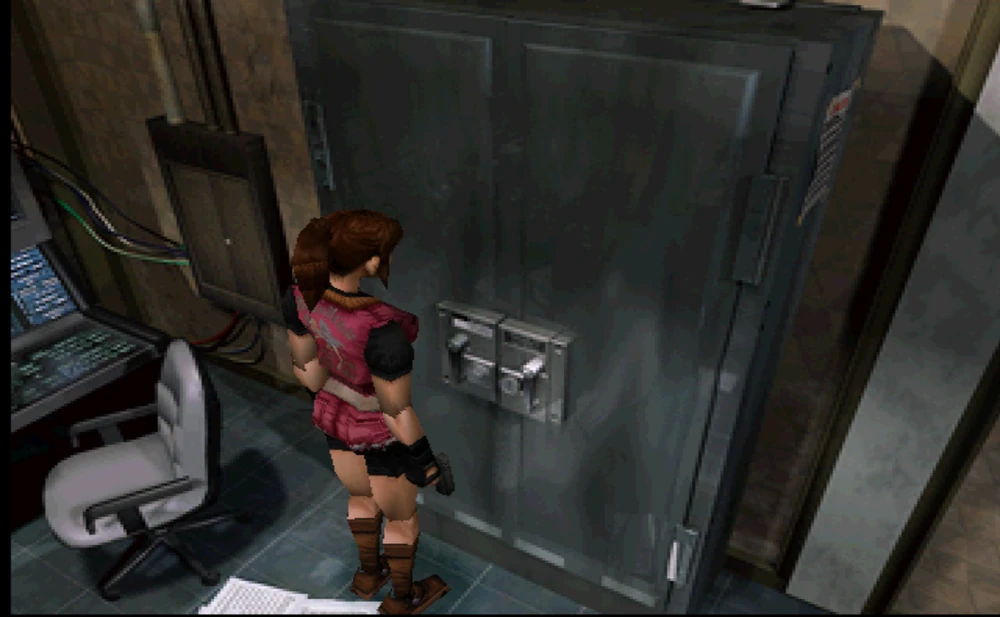
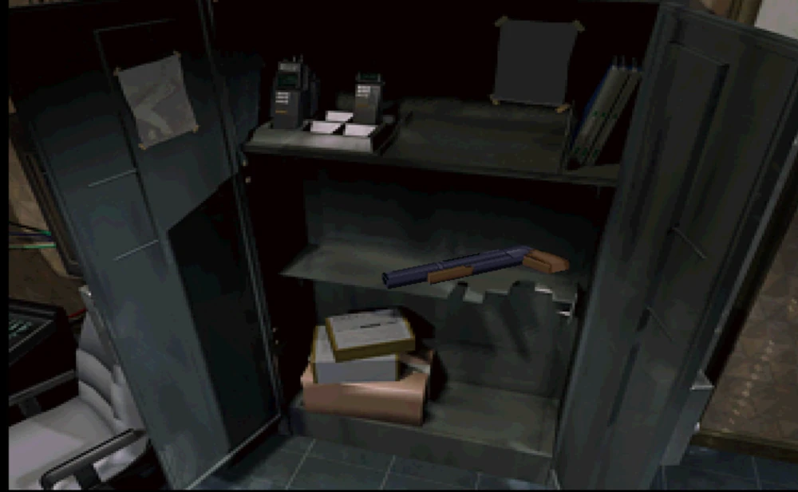
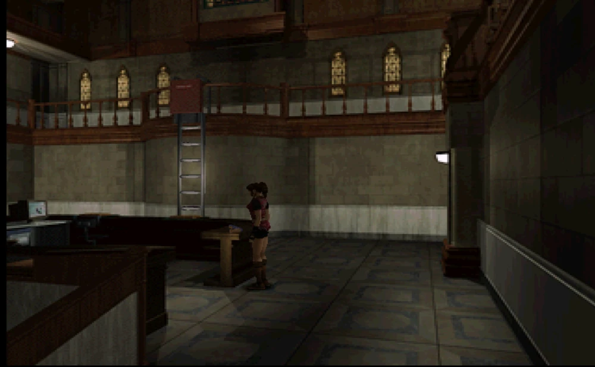

|
|
| Información general | |
|---|---|
| Poder de fuego | Alto |
| Velocidad de fuego | Lento |
| Clase de arma | Lanzagranadas |
| Valor | Ninguno |
| Fuente: Resident Evil Wiki | |
Descripción
El Lanzagranadas M79 es un arma que aparece en Resident Evil 2.
Características
Este lanzagranadas es un arma exclusiva de Claire Redfield , esta arma a diferencia de otras, permite alternar su munición usando una variedad de municiones con diferentes tipos de uso, lo que la hace un arma versátil para enfrentarse contra todo tipo de enemigos. Solo permite disparar un proyectil a la vez.
El M79 puede cargarse con tres tipos de municiones diferentes:
- Granadas Explosivas: Granadas explosivas similares a una granada de mano. Es la munición normal del M79 y de la cual se encuentra en mayor cantidad. Vienen en contenedores con tapa gris. Las granadas se disparan en forma de racimo de varios pequeños explosivos que explotan sobre un área.
- Granadas Ácidas: Unos proyectiles especiales llenos de ácido sulfúrico. Pueden usarse con el M79. Vienen en contenedores con tapa amarilla. Son el tipo de granada más eficaz contra ciertos tipos de enemigos como los lickers.
- Granadas Incendiarias: Unos proyectiles especiales llenos de napalm. Similares a las granadas estándar, pero estas explotan y siguen causando daño al enemigo. Vienen en contenedores con tapa roja. Son muy efectivas contra las plantas Ivys , las arañas gigantes y William Birkin.
Localizaciones
Sólo se puede encontrar esta arma al jugar con Claire Redfield.
- Escenario A : oficina de S.T.A.R.S. , segundo piso de la comisaría de policía. Se encuentra dentro del armario para armas.
- Escenario B : vestíbulo, primer piso de la comisaría de policía. Se encuentra en el escritorio de la secretaría.



Curiosidades
- A diferencia de otros lanzagranadas, el M79 no dispara las granadas desde un tambor giratorio, si no que se dispara un proyectil a la vez, haciendo que se deba recargar cada vez que se dispara.
- En el prototipo del juego, esta arma iba a aparecer como un arma exclusiva de Elza Walker, mientras que Leon debía usar granadas de mano.
- En el remake del juego, esta arma aparece como GM 79, y a diferencia de la original, se puede modificar al añadirle una culata que mejora la estabilidad de disparo, aunque en este juego, solo se puede cargar munición ígnea o ácida, ya que no existe la munición explosiva.